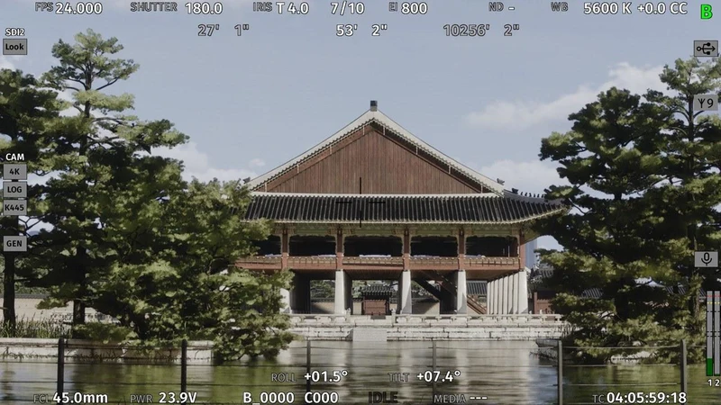
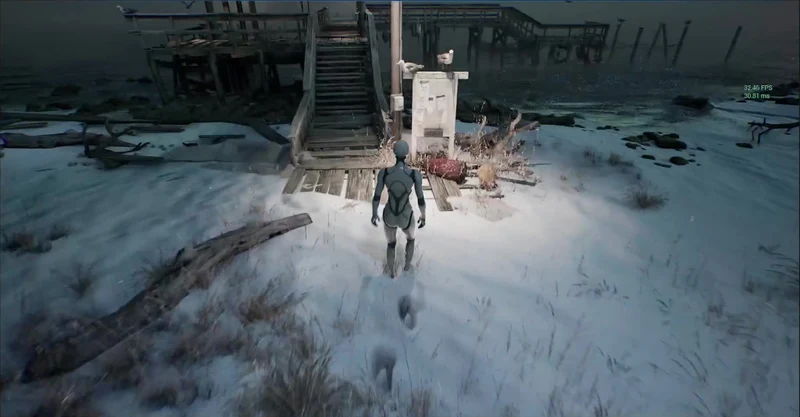
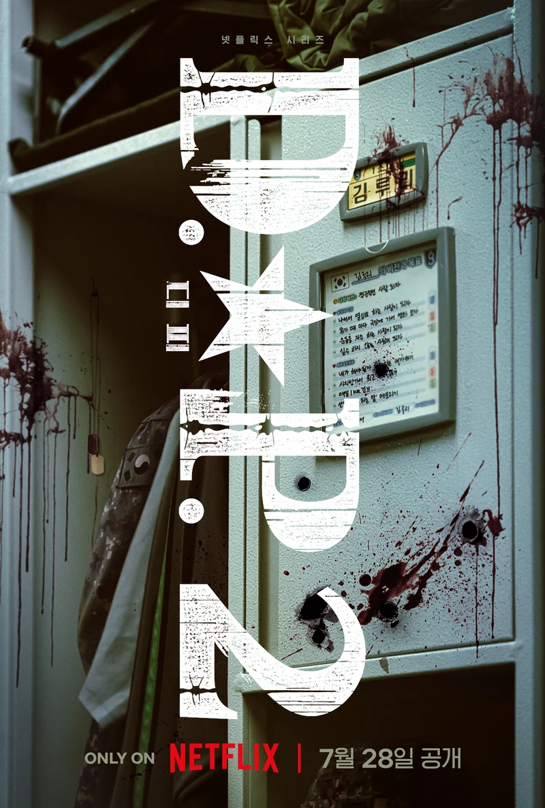
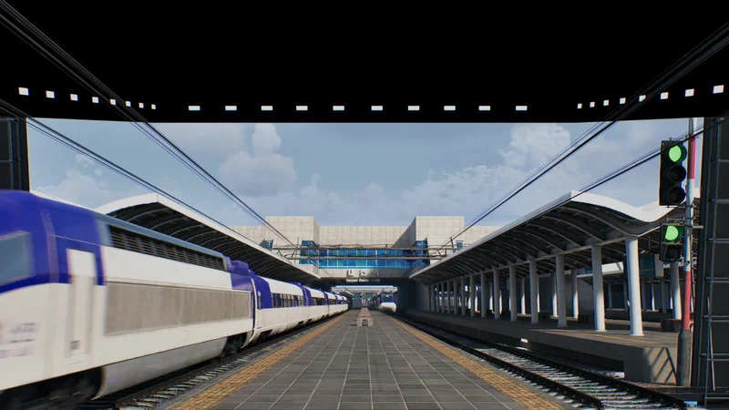
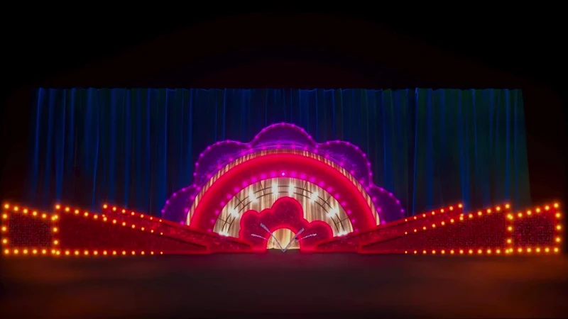
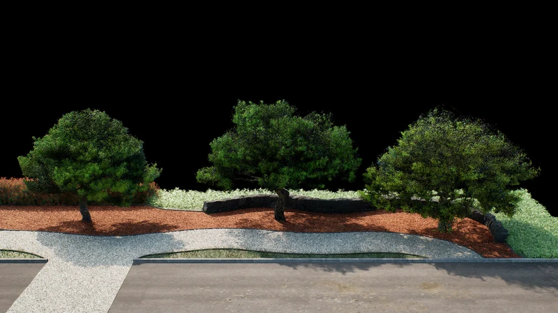
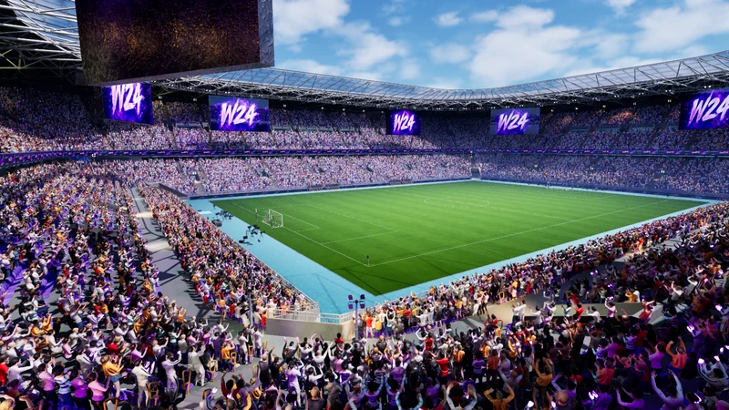
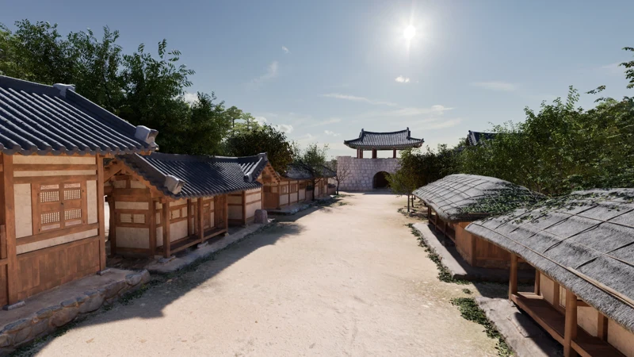
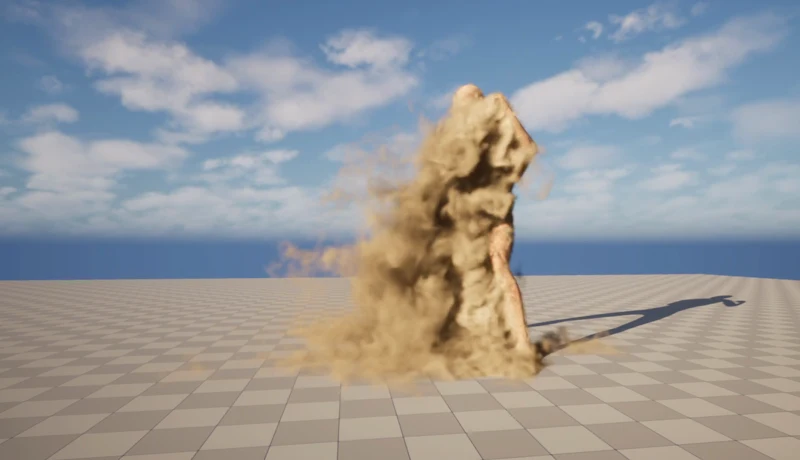

01회사 프로젝트

대전 스튜디오
02개인 프로젝트

2026눈 표면 인터랙션
03회사 프로젝트

2023D.P. 시즌 2
04회사 프로젝트

2024MBC 선거방송
05회사 프로젝트

2025천천히 강렬하게
06회사 프로젝트

2025–2026한국도로공사 프로젝트
07회사 프로젝트

2026W24 — Now I'm Never Die
08회사 프로젝트

2024문경·경북도 스튜디오
09개인 프로젝트

2026.11 — 진행 중나이아가라 모음집
다른 작업 보기
02 / 09개인 프로젝트
눈 표면 인터랙션
구현 · 발 접촉 검사 / 눌림 계산 / 발별 상태 관리
발을 디딘 자리에 흔적이 남고, 눈에 들어간 깊이에 따라 눌림이 달라지도록 만든 표면 인터랙션.
프로젝트 자세히 보기